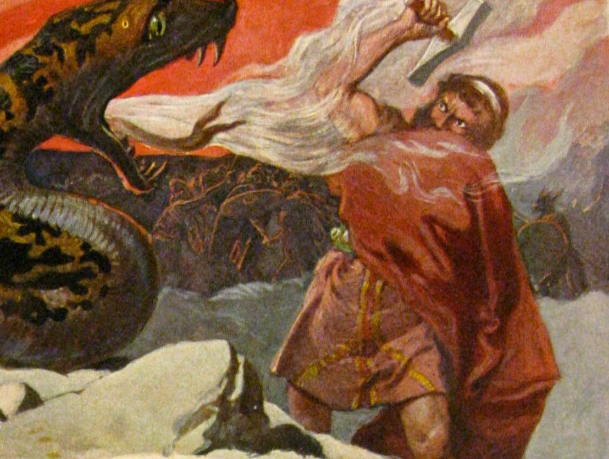
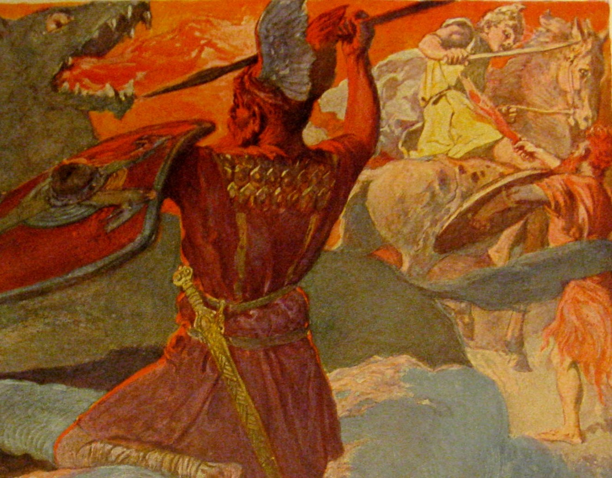
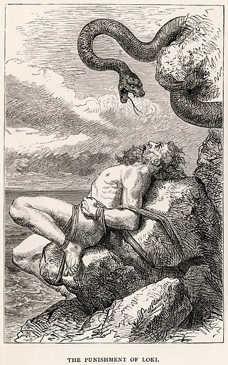
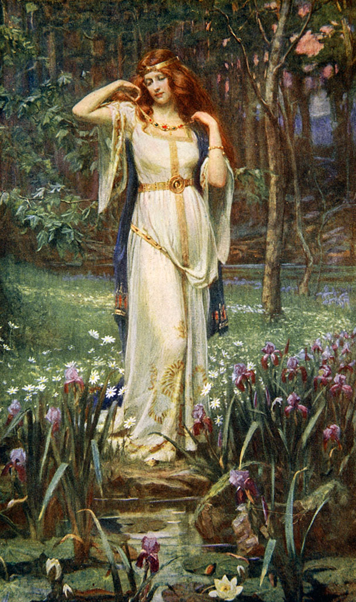
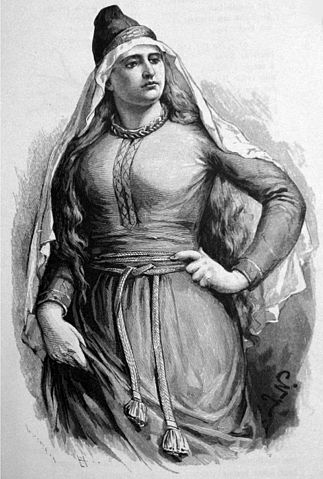
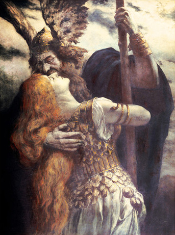
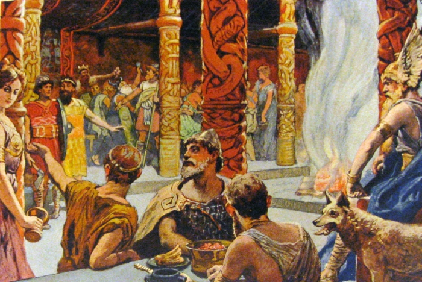
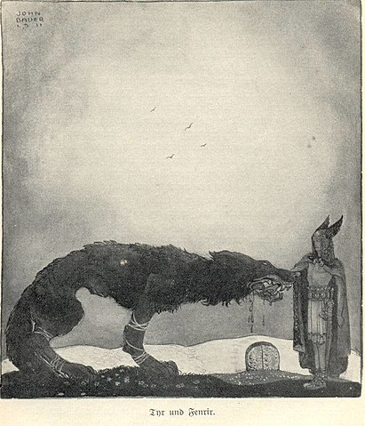
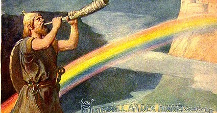

Introduction
Beneath is a list of 6 vikings. Note it is a mere haphazard selection of memorable vikings; many more could be included.
Thor

Thor fighting the Snake of Midgard (c. 1905 by Emil Doepler)
One of the most famous Nordic gods is Thor (traditionally he is called Þórr and he should be pronounced with a long 'o'). He is the god of thunder and represents bravery, strength and justice.
Thor's alternative name is Wodan, and that is where we derive the word 'Wednesday' from.
Thor's most famous attribute is his hammer, Mjölnir. It is said to return anytime he threw it away.
The heavy weapon points to Thor's great physical strength; his physique is said to be stronger than any other god.
Odin

Thor fighting the fenrirwolf during Ragnarök (c. 1905 by Emil Doepler)
Thor's father was the supreme deity of the Normans. He sacrificed one of his eyes to improve his oversight of the universe.
Besides this tool, Odin had two helpers: Hugin and Mugin. These crows were the 'eyes and ears' in the realm of mortals - and oversaw Odin's affairs on earth.
Loki

Loki being punished for his tricks (c. 1900 by Louis Huard)
Loki is the trickster of the Nordic gods.
He is the brother of Odin, but far less esteemed than the supreme God.
Instead of courage, Loki is konwn for mischief, and playing games with his fellow gods.
Freyja

Freyja with her necklace Brísingamen (c. 1890 by James D. Penrose)
Just like Romans had Venus and Greeks had Aphrodite, the Normans worshipped the god Freyja.
She symbolized love, fertility and more things in ásatrú (the old Norse religion).
Freyja often wears a necklace around her neck. It is called Brísingamen.
The word literally translates to 'fire' and 'men', but scholars are uncertain about the exact meaning.
What is certain, is that the icelandic word for necklace 'hálsmen' is still very much alike.
Frigg

The goddess Frigg (c. 1893 by Jenny Nyström)
Whereas Freyja is the goddess of lustful love, Frigg is the goddess of a more contained love: she represents marriage, family and motherhood.
Another difference is that they originate from two different Nordic tribes (Aesir and Vanir).
She was the wife of Odin, and was allowed many priviliges accordingly.
Odin trusted her so much, that Frigg could overview the nine realms of Odin whilehe was away.
Brunnnhilda

Odin and Brunnhilda (n.d. by Ferdinand Leeke)
Brunnhilda is what we call a shieldmaiden, or valkyrie.
These mythic figures are said to decide on who lives and who dies on the battlefield.
Brunnhilda is known for her purity, self-sustenance (feminism) and stubbornness.
On one occasion she refused to obey Odin's demand to find a man to marry.
She responded: 'I will only marry a man who has no fear'
As a punishment Brunnhilda was placed on a mountain top, and she was surrounded by shields.
Syn

The heavenly hall Valhalla, that Syn had to protect (c. 1905 by Emile Doepler)
Syn was the god who held guard for the gates to Odin's hall.
That function makes it easy to realize how Syn was the goddess of strictly refusing the desires of others.
After all, Syn's very name means refusal in Old Norse langauge.
Besides being a literal 'gatekeeper', Syn was a defendant for those who stood on trial.
Tyr

Tyr with the hell-dog Fenrir (c. 1911 by John Bauer)
Those who know the god Tyr probably associate him most with the loss of his hand.
The way he lost this limb, is through a daring attempt to contain a wolf.
The 'dog of hell' Fenrir had terrorized the earth, and had to be chained.
Tyr was courageous enough to make an attempt, but lost his hand to Fenrir's bite in the end.
Heimdall

Heimdall and the heavenly rainbow bridge
Of all the gods, Heimdall is said to have shone the brightest.
Perhaps his luminescence partly hints to the sun, but it surely points to his white skin.
Heimdall sat atop Bifröst; the rainbow bridge connecting Asgard (realm of gods) and Midgard (realm of mortals).